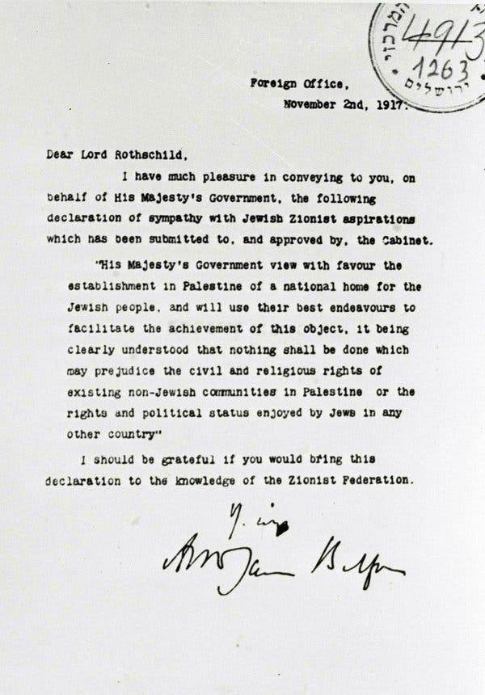

영국은 전쟁에서 승리하기 위해 유대인에게는 벨푸어 선언을, 팔레스타인 사람들에게는 맥마흔 선언을 했다.
영국과의 약속을 믿었던 양 민족은 영국의 승리에 협조하고자 대대적인 전투를 벌였고,
1917년 연국은 승전국 중 하나가 되며 국제 연합으로부터 팔레스타인 지역에 대한 통치권을 위임받았다.
그러나 영국은 땅에 대한 약속을 지킬 생각이 없었다. 그저 제 2차 세계대전 당시 박해받던 유대인들에 대한
보상을 해줘야 한다는 국제적인 분위기가 잡히자, 어영부영 국가 건설에 대한 지지만 해주었을 뿐이다.
영국의 국가 건설을 지지로 많은 유대인들이 팔레스타인 지역으로 이주하기 시작했고,
1930년대에는 나치의 유대인 박해를 피해 더욱 많은 유대인들이 팔레스타인으로 이주하지만,
먼저 이 땅에 살고 있으면서 같은 땅에 대한 약속을 받은 아랍인들과 갈등이 일어났다.
이 분쟁은 수십년이 지금까지 이어지며 두 민족을 갉아먹고 있다.
02.
벨푸어 선언
1917년 아서 밸푸어 영국 외무대신이 발표한 외교 선언이다.
팔레스타인 지방에 유대인의 국가 수립을 약속한 이 선언은 근현대 중동의 역사를 뒤흔들게 된다.
프랑스 혁명 이후 유대인들에게도 시민으로의 권리가 부여됨에 따라,
서유럽에서 유대인들은 자신들의 정체성을 잃고 점차 유럽 시민 사회에 동화되고 있었다.
하지만 1890년대 프랑스를 혼돈으로 몰아넣은 드레퓌스 사건 당시 유럽 사회가 여실히 보여준 반유대주의는
많은 유대인들에게 충격을 안겨주었고, 아무리 동화되고자 해도 언제든지 유대인 박해가 부활할 수 있다는 공포가 확신되었다.
빈 출신의 유대계 오스트리아 언론인 테오도르 헤르츨 역시 그중 한 사람으로 1896년 그는 <유대 국가>(Der Judenstaat)라는 저서에서
팔레스타인 지방에 유대인들의 민족 국가를 재건할 것을 역설한다.
이러한 와중이었던 1914년 제1차 세계 대전이 발발한다.
영국은 팔레스타인을 지배하고 있던 오스만 제국과 적성국이 되면서 바이츠만의 주장이 탄력을 받았고
여기에 힘을 보탠 것은 열성 시온주의자였던 당시 영국 내무 장관 허버트 새뮤얼 경이었다.
이어서 1916년 영국은 동맹국이었던 프랑스, 러시아 제국과 '전쟁 이후 오스만 제국의 영토를 분할한다'는 내용의 비밀 협정을 체결한다.
이 비밀 협정에 의거하여 팔레스타인 일대는 영국의 관할로 들어오는 것이 계획되면서 밸푸어 선언은 점차 현실화되기 시작한다.

벨푸어 선언레터
외무장관 아서 밸푸어가 적극적으로 시온주의자들을 지지하면서 밸푸어 선언은 급진전을 타고,
마침내 1917년 11월 2일 아서 밸푸어의 명의로 당시 영국 내 유대인들의 대표자 격이었던 월터 로스차일드에게
다음과 같은 편지가 공식적으로 발표된다.
로스차일드 경에게 (Dear Lord Rothschild),
국왕 폐하의 정부를 대신하여, 시온주의자들의 염원이 담긴 다음 지지 선언문이
내각에 제출되고 승인을 받았다는 사실을 당신께 전하게 되어 기쁩니다.
(I have much pleasure in conveying to you, on behalf of His Majesty's Government, the following declaration of
sympathy with Jewish Zionist aspirations which has been submitted to, and approved by, the Cabinet.)
본 정부는 팔레스타인에 유대인의 민족적 고향을 세우는 것에 대하여 지지를 표하며
이를 성취하는 데 최선의 노력을 기울이는 한편, 팔레스타인에 거하는 비 유대인의 시민적 그리고 종교적인 권한에 대해,
또는 타국에 거하는 유대인의 정치적인 상태에 대해 아무런 편견을 갖지 않을 것입니다.
(His Majesty's Government view with favour the establishment in Palestine of a national home for the Jewish people,
and will use their best endeavours to facilitate the achievement of this object,
it being clearly understood that nothing shall be done which may prejudice the civil and
religious rights of existing non-Jewish communities in Palestine,
or the rights and political status enjoyed by Jews in any other country".)
(중략)
03.
후세인-맥마흔 선언
샤리프 후세인
헨리 맥마흔
팔레스타인은 당시 오스만 제국으로 불리던 오스만 제국의 지방이었다.
튀르키예군은 독일과 오스트리아 및 헝가리와 같은 편에 서서 참전했다.
그런데 당시 오스만 제국은 광활한 영토를 모두 직접 관리하지 못했고,
20세기 들어서는 튀르크 민족주의가 발동하며 아랍 지역의 소외가 더욱 심해졌다.
오스만 제국의 그런 문제에 대해 잘 알고 있었던 영국이 당시 메카의 군주이자
하심 가문 아미르인 후세인 빈 알리 (샤리프 후세인)에게 비밀협상을 제안했다.
영국은 후세인 빈 알리에게 팔레스타인을 포함한 아랍 국가지역에 독립 국가를 세울 수 있도록 도와주겠다 약속한다.
영국은 팔레스타인의 국가 건설을 약속하는 대신 후세인이 오스만 중앙정부에
저항하는 반란을 일으켜야 한다는 조건을 달았다.
이 영국 외교관 헨리 맥마흔 경과 후세인 빈 알리와 주고받은 이 서신들은 후세인-맥마흔 서한으로 불린다.
후세인은 영국의 제안을 받아들여 1916년 오스만 제국에 대한 반란을 일으켰고,
아라비아의 로렌스로 잘 알려져 있는 토머스 에드워드 로렌스가 후세인 빈 알리를 도왔다.
그러나 영국과 후세인의 약속은 애초에 지켜질 수가 없는 것이었다.
당시 영국은 후세인 외에도 2개국과 같은 땅을 두고 서약을 했으며 약속을 지킬 생각이 없었다.
프랑스 역시 영국이 현지인들에게 무슨 약속을 했건 자신에게 알바 아닌 문제였으며,
영국 역시 프랑스의 전후 요구를 막을 명분도 힘도 없었다.
한국에선 맥마흔 선언 vs 밸푸어 선언으로 잘못 알려졌지만 후세인- 맥마흔 서한이 무시된 건 사이크스-피코 협정이다.
벨푸어 선언은 전체 아랍 지역이 아닌 팔레스타인 지역에 국한된 내용이고, 맥마흔 선언과 사이크스 피코 협정이
아랍 전역을 배경으로 하고 있다. 아랍인들의 입장과는 전혀 무관하게 진행된 외교전이었고,
샤리프 후세인의 거병을 유도하기 위한 거짓 약속이었지만 힘이 곧 정의였던 제국주의 시기에 아랍인들이 어찌할 수 있는 것은 별로 없었다.
일례로 전후 시리아에서 하심 왕가인 파이살 1세를 군주로 하는 시리아 왕국이 세워졌지만,
1920년 프랑스 군이 침공해 무력으로 무너뜨린 후 위임통치령으로 삼아 지배했다.
하심 왕가가 왕국이 허가된 것은 영국 영향력 하의 요르단과 이라크 뿐이었는데,
그마저도 1940년대 중반까지 국방권과 외교권은 영국에 있는 허울 뿐인 독립이었다.
더군다나 본진이라 할 수 있는 헤자즈 왕국은 영국의 벨푸어 선언 지지 요구를 거부했다가
밉보여 결국 네지드 왕국에게 멸망당하고 만다.